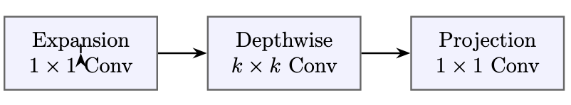
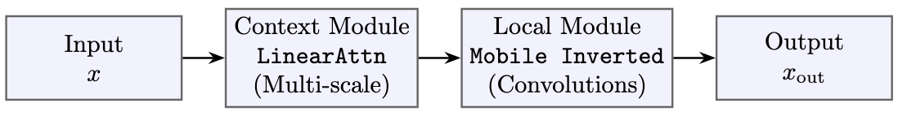
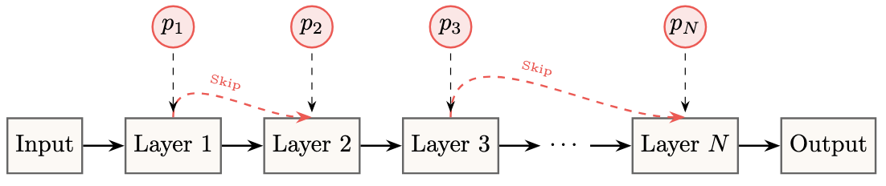
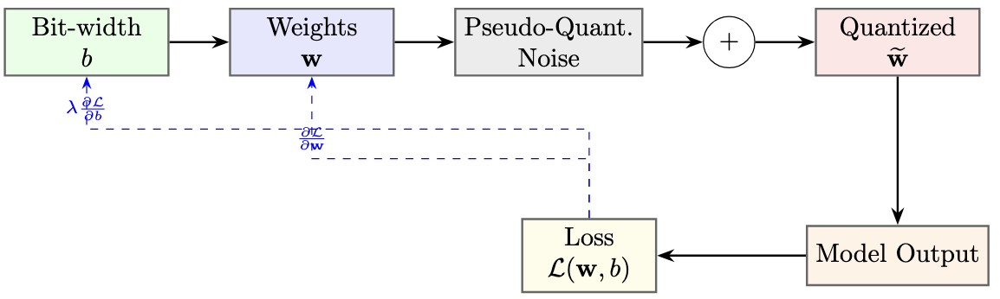
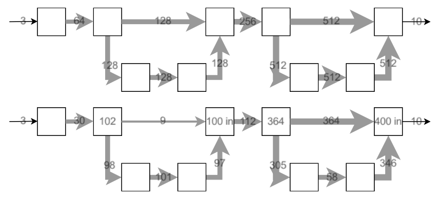

class: center,middle # Self-Compressing Vision Tower for Efficient Dense Prediction Tasks ##### Thesis Defence [Github](https://github.com/adishourya/SelfcompressingDepthWiseAttn) [Experiments](https://www.comet.com/adishourya/convolution-compressing/view/new/panels) <figure style="text-align: center;"> </figure> > Aditya Shourya (i6353515) --- class: center # .rtext[.huerotate[Problem]] ### State of the art vision models dont fit on most devices. #### .gtext[Significance]: Most Devices then trade throughput or accuracy. #### .btext[Example]: Cannot trade either on applications like wildlife/sports photography <figure style="text-align: center;"> <figcaption>.grtext[Example: autofocusing needs to be quick and highly accurate]</figcaption> </figure> --- class: center,top # Agenda .left[ 1. Related Work 2. Research Question 3. Method & Experiments 4. Results 5. Discussion ] --- class: split-slide .lco[ # Related Works #### .gtext[Non Compressing Methods] 1. Works on Choosing the most throughput efficient Compute Module : Efficient Net 2. Works on Structured Pruning of Deeper Layers : LayerDrop #### .btext[Compressing Methods] 3. Works on Accurate Backpropogation on Quantized Modules: DiffQ 4. Structured Pruning and Compression penalizing Weight Size : Self Compressing Convolutions ] --- class: center,top ## .btext[Efficient VIT] <figure style="text-align: center;"> <p></p> <figcaption>.grtext[Fig1. Local Module]</figcaption> </figure> <figure style="text-align: center;"> <p></p> <figcaption>.grtext[Fig2. Efficient VIT Transformer Block]</figcaption> </figure> .left[ - Current State of the art Vision Model for high throughput and high accuracy model. - It delegates local context to inverterted bottleneck composition of convolution functions. - And Global Context to Linear Attention. - .gtext[Proven effective across model sizes and dense prediction tasks → adopting most of its design principles] - .rtext[ Trained in BF16 (AMP) , No explicit effort to minimize model size] ] --- class: center,top ### .btext[LayerDrop] <figure style="text-align: center;"> <p></p> <figcaption>.grtext[Fig3. LayerDrop]</figcaption> </figure> .left[ - Like `nn.Dropout` but on entire layers. - Each layer is assigned a learnable probability of skipping. - The probability term is trained alongside the weights of the model. - .gtext[Extract Graphs given on compute capability.] - .rtext[Mostly on Benificial For very Deep Layers] ] --- class: center,top ### .btext[DiffQ] <figure style="text-align: center;"> <p></p> <figcaption>.grtext[Fig3. LayerDrop]</figcaption> </figure> .left[ - Provides Complete End to End Differentiable Quantization. - Introduces Noise after activation which has the standard error uniform over the interval of a single quantization bin, matching the distribution of a standard error of round-to-nearest operation. - .gtext[Noise is supposed to counter the effects of standard Straight through Estimators] - .rtext[Paper Discusses sizable overhead to manage noise for each group of weights] - .rtext[No Pruning Capabilities limits min bit-depth to 1] ] --- class: center,top ### .btext[Self Compressing Convolutions] <figure style="text-align: center;"> <p></p> <figcaption>.grtext[An overview of the number of weight channels in the example classification network before (top) and after (bottom) applying Self-Compression.]</figcaption> </figure> .left[ - It offers a direct alternative to noise-based methods like DiffQ by parameterizing bit-depth as a trainable parameter like LayerDrop. - Uses a tempered sigmoid gate to smoothly reduce bit-depth to zero, pruning weights or channels. - Employs coarse, mode-level grouping for stability and reduced catastrophic forgetting. - Treats scale, exponent, and bit-depth as optimizable parameters; uses STE instead of noise injection. - .rtext[Study only performs this on convolution modules] - .gtext[the idea can be extended beyond convolutions to compress attention, transposed convolutions, and linear projections.] ] --- class: center,top ## .btext[.huerotate[Research Questions]] .left[ 1. Can we develop a unified, self-compressing vision architecture that prunes and compresses model components based on their computational cost, rather than applying a uniform approach? 2. Does this selective compression strategy maintain or improve model performance on dense prediction tasks, such as fine-grained classification, semantic segmentation, and optical flow, compared to state-of-the-art non-compressed models? 3. How do the storage requirements and inference throughput of our self-compressing model compare to existing models like EfficientViT and DiffQ on a given hardware target? 4. Can the compression process itself serve as a tool for inspecting the relative importance of different modules across model layers, thereby enabling better architectural design? ] --- class: center,middle ## Method .left[ 1. .gtext[Quantization Approach] 2. .btext[Objective Function] 3. .ptext[Implement on Architecture] ] --- class: split-slide .lc[ # .gtext[Quantization Function] - Differntiable bit depth (b) and exp bit (e) inside the quantization function. ```py def quantize_weight(x,b=3.5,e=-3.5): x_scaled = x/torch.exp2(e) half = torch.exp2(b-1) x_clipped = torch.clip(x_scaled,-1*half,half-1) x_round = torch.round(x_clipped) x_scaled_back = torch.exp2(e) * x_round return x_scaled_back ``` .grtext[This `q()` looks very similar to any other Q8A. For an example int4 which is `clip(x/s, -2^2, 2^2 -1)`] ] .rc0[ <video height="660" width="590" controls> <source src="./scratchpad/presentation/mid-term/QuantizationAnimation.mp4" type="video/mp4"> </video> ] --- class: split-slide .lc[ # .gtext[Quantization Function] - instead of using pseudo-quantization noise like in DiffQ which is expensive we use STE estimators. - the derivative of a rounding function is either 0 or not-defined. - Since `b` and `e` are inside the rounding function we need STE Rounding. - With STE estimator we can now perform quantization aware training. - There exists smaller level sets of bit depth for every precision given tolerance as a function of precision. ] .rcb[ ```py class STERound(torch.autograd.Function): """ same gradient as parent node. Also called as pass through gradient. or Straight Through Estimator. """ @staticmethod def forward(ctx,x): return torch.round(x) @staticmethod def backward(ctx,upstream): """ local jacobian is 1. """ return upstream ``` ] --- class: split-slide .lc[ # .gtext[Quantization Function] - If During Training: - Bit depth increases: counters effect of clipping. - Abs(Exp) bit increases: counters effect of rounding. - if a weight or a group of weight reach a bit depth of 0. - The tensors are pruned for next time step. ] .rc0[ <video height="660" width="590" controls> <source src="./scratchpad/presentation/mid-term/toSparse.mp4" type="video/mp4"> </video> ] --- class:center,top ## .btext[Objective Function] .left[ 1. Penalizing Factor 2. Loss Function ] --- class:center,top ## .btext[Penalizing Factor] .left[ - Self Compressing Conv Study penalizes the shape of the matrices. - we diverge from the study and penalize the cost of the operation. - this cost is designed to be almost trivially proportional to the step complexity of the operation in a parallel accelerator. - For an example: ] --- class:center,top <video width="1200" ,height:"1080", controls> <source src="./scratchpad/presentation/VectorOpsComparison.mp4" type="video/mp4"> </video> --- clas:center,top - so we have added penalty if the compute module performs reduction over shared block memory. - or else we penalize modes of tensors that increase scheduling. --- class: center,top ## Architecture --- class: center,top ## Compute Model Convolution --- class: center,top ## DepthWise Convolution --- class: center,top ## Transposed Convolution --- class: center,top ## Linear Attention --- class: center,top ## Ablation Studies --- class: center,top ## Pixel Shuffling vs Transposed Convolution --- class: center,top ## Pointwise Convolution --- class: center,top ## Parallel Execution of linear attention --- class:center,top <video width="1200" ,height:"1080", controls> <source src="./scratchpad/presentation/PixelShuffling.mp4" type="video/mp4"> </video> --- class:center,top <video width="1200" ,height:"1080", controls> <source src="./scratchpad/presentation/ShufflingProblem.mp4" type="video/mp4"> </video> --- class:split-slide .lc[ # Training Objective - we will penalize our model by the current size of the model. - the current size is given by the sum of the layer size of the targeted "quantized" modules. - This also acts as a regularization term. (like the l1 loss which gets penalized by the sum of model's `abs(weights)`) ] .rcb[ ```py with torch.autocast(device_type="cuda", dtype=self.amp_dtype): out = self.model(batch_img) # end of fwd pass # current size of model / init size of model bit_decay = self._qlayersize() / self.qtot_init # add penalty term loss = cross_entropy(out,batch_label) + self.gamma * bit_decay ``` ] --- class:split-slide .lc[ # Compression Heuristics Needed > In my project plan i proposed a model with convolution in skip connections to aid linear attention improve its local inductive bias (which also had some full softmax attention at the start of the layer) 1. Convolution Heuristics (We get for free from the article, authors did not release code) 2. nn.Linear (Done) 3. Full Softmax Attention (Decided on Heuristics, not implemented yet) 4. Linear Attention (Not decided on Heuristics) ] .rc0[ <div class="mermaid"> graph TD I[Img] --> A[Embed] --> B(•) B --> C[Softmax Attn] C --> D[Lin Attn* x] D --> L(•) B -- skip connection --> E[QConv] E --> L L -- repeat n times --> Z[Logits] </div> ##### Proposed Model Architecture .breathe[.rtext[we will make few changes]] *Linear x times so that profiling time for Qconv is similar to Full Softmax + linear Attn* ] --- class: split-slide .lc[ # Convolution Heuristics - We tie a quantization function to each kernel see `__init__` - Calculating Size layer which contributes to the penalty term is proportional to the actual active size of the layer. see `size_layer()` ```py # a much more accurate size would have been size_layer = prods* torch.where(self.b>0,1,0) # but the above only promotes sparsity. #+ (sum of bit depth) promotes both compression and sparsity ``` - We Quantize the weights of the layer every forward pass. see `__call__` - Bad training batches can result in "irreversible" forgetting ] .rcb[ ```py class Qconv(torch.nn.Module): """ weight tying exp_bits and depth_bits 1 per out_channel """ def __init__ (self,...): ... # 1 for each kernel (out_channel).. self.exp_bit = torch.ones(out_channels,1,1,1)*e self.depth_bit = torch.ones(out_channels,1,1,1)*b ... def size_layer(self): prods = torch.as_tensor( self.weight.shape[1:]) # height * width * sum of depths -> size = torch.prod(prods) * torch.sum(torch.relu(self.depth_bit)) return size def __call__(self,x): # quantize every forward pass W = self._quantized_weight() return F.conv2d(x,W,padding=self.padding) ``` ] --- class:center,top <video width="1200" ,height:"1080", controls> <source src="./scratchpad/presentation/mid-term/compressKernels.mp4" type="video/mp4"> </video> --- class:center,middle # End of slides <!-- slide stuff -->